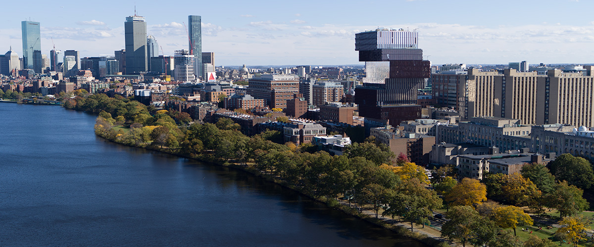

我喜欢波士顿大学，因为大学有很多活动。我每天都很忙！我觉得看比赛很有意思。波士顿大学的运动真的很好。波士顿大学的冰棍球真好，所以你应该看比赛。我也喜欢我所有的课，可是我有太多的功课。我常说”做完了所有的功课以后再玩”。你要复习，因为期中考试和期末试很难。
一个宿舍比公寓很近上课。可是，宿舍比公寓很便宜。如果你住在波士顿大学的公寓（ex. Stuvi），他比公寓很贵。你可以看找一个公寓被上网。很多波士顿大学学生发他的公寓。常常学生谁有一套公寓住在Allston或者Fenway。Allston有很多饭馆的中国菜。Fenway很近Newbury Street和公园的Fenway。学生谁住在Allston他们开绿色火车上课。学生谁住在Fenway走去上课。如果你搬家，你常常住在跟一或者两个同屋，因为波士顿很贵。

每个星期我都走到Charles River Esplanade，常常晚上我跟我朋友在那儿走走，因为我们喜欢运动和聊天。我也喜欢去波士顿公园。去年秋天，我去了波士顿公园。这个公园又大又漂亮。公园有一个女人，她画了很多人。他们不用付钱给她，因为这是慈善。她说“你想付多少钱都可以“。我认识很多朋友，因为我喜欢在上课以前跟大家聊天。所以，我可以约同学一起准备考试或者吃中饭。我喜欢去社团，波士顿大学有多社团。我常常去电脑社团，一边学习，一边玩游戏。